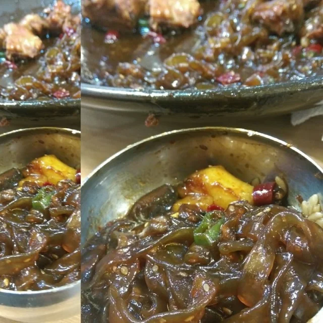
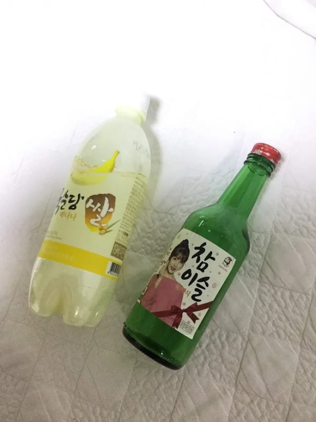
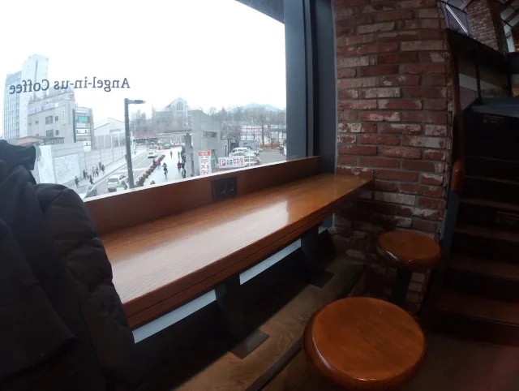
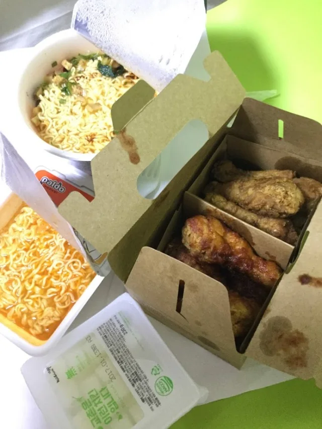

👈 回顧中篇：2016 首爾聖誕紀錄（中）：宮闕、市場與韓流聖地
👈 回顧中篇：2016 首爾聖誕紀錄（中）：宮闕、市場與韓流聖地
繼續 2016 首爾聖誕紀錄的尾聲。

有置入就好賣。完成度 50%，臉一半畫了妝的正妹。滿滿的宮保雞丁，大平台 99 熱炒吃到飽在「내가찜한닭（新村安東燉雞）」。這粉條吸汁超優，不夠吃怎麼辦。U-Know Time’s Up。
室友招待香蕉瑪格麗，在 Cozybox。SBS 《Running Man》全員到齊，7012。

📌 **7012 的眼淚與 SBS 歌謠大戰**
2016 年底正是《Running Man》歷經改版風波、差點面臨停播的動盪期，「7012（七個人永遠在一起）」成了粉絲最鼻酸的密碼。同時期的 SBS 歌謠大戰，也是每年聖誕假期死守轉播的重頭戲。

完全一個韓元花光光的節奏，TT feat. TWICE，來點橋村炸雞吧，在新村。兩個裝不下要怎辦，Dinner time at Cozybox。猶記無限的感動，Love 大合體 Oh Love，可惜不是現場唱呀。TWICE, GFRIEND, JYP, SBS 在 COEX Hall D。BIGBANG, GD, TOP, 太陽, 勝利, 大聲。因為超重，一個晚上我喝完她們了在 Cozybox。
我又來大賣場了，在合井 Homeplus。走過路過沒有錯過，找地方乘涼。今日戰利品。

轉眼走到了本次旅程最終章，在延世大學（Yonsei University）。觀光客在延大。
終於吃到肉桂芝麻餅了在南大門市場。還有每次必吃的雜菜煎餅，次數超越 Isaac，在會賢站。Mr. Brown Coffee 在首爾站。這次就不要再自己打包了在 Lotte Mart。不知道買了什麼得到的 Special discount，退現金我也會很高興的在 Lotte。其實包得滿好看的。
25 小時首爾到桃園，然後從台北新竹來回飛了半小時，有點賺搭乘時數在桃園國際機場。